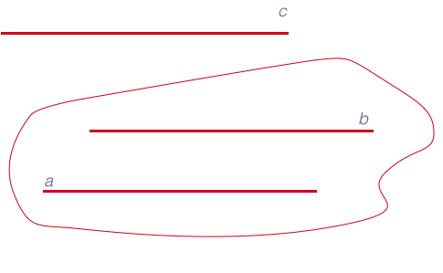

Параллельные
прямые - несовпадающие
прямые,которые лежат в одной
плоскости и не
пересекаются, т.е. не имеют ни одной общей
точки.

Признак параллельности прямых
Если две
прямые
параллельны третьей
прямой, то они
параллельны между собой.
Теоремы о параллельных прямых в пространстве
-
Через любую точку пространства, не лежащую на данной
прямой, можно провести одну и только одну
прямую,
параллельную данной.
-
Через две параллельные
прямые можно провести одну и только одну
плоскость.
-
Если одна из двух параллельных
прямых
пересекает данную
плоскость, то и другая
прямая
пересекает эту
плоскость.
-
Если прямые,
проведенные в двух различных пересекающихся
плоскостях,
параллельны, то линия пересечения этих
плоскостей
параллельна данным
прямым (или совпадает с одной из них).